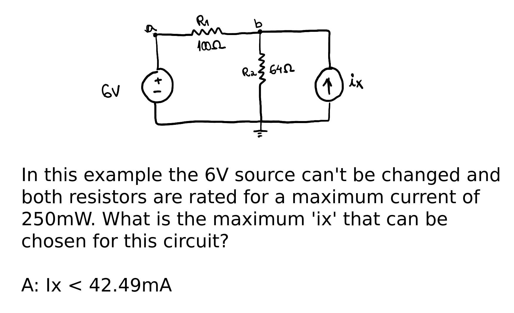
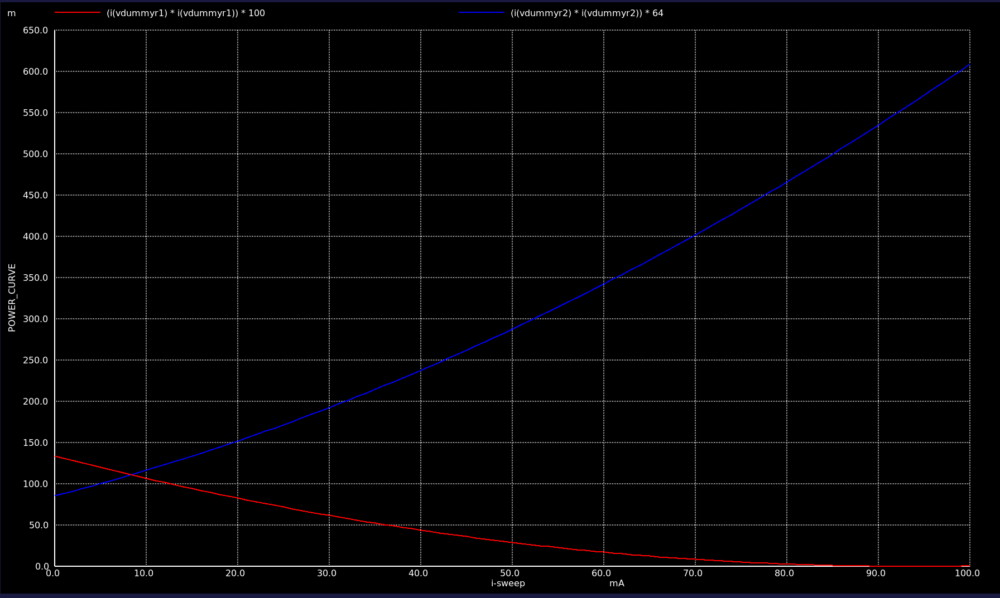

Created at: 2025-11-16
For this circuit:

We can do a DC parameter sweep varying the current source from 0 to 100mA in increments of 1mA:
DC parameter sweep
* The fixed voltage source and R1
V6 a 0 6V
R1 a b 100
* Ngspice can only plot a current through an independent voltage source.
* Therefore we create a dummy one here to get the current through R1.
VdummyR1 b bb 0V
R2 bb zero 64
* Ngspice can only plot a current through an independent voltage source.
* Therefore we create a dummy one here to get the current through R2.
VdummyR2 zero 0 0V
* Finally, we've got the current source.
Ix 0 bb 0.100A
.control
options savecurrents
* run a dc sweep analysis of Ix
dc Ix 0.00 0.100 0.001
plot (I(VdummyR1) * I(VdummyR1)) * 100 (I(VdummyR2) * I(VdummyR2)) * 64 ylabel POWER_CURVE
.endc
Which plots the following:
